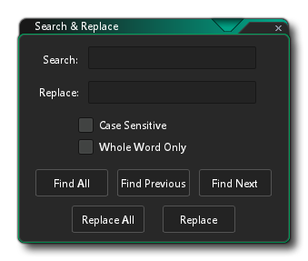

在编辑菜单中你可以使用GameMaker Studio 2界面的一些常规编辑工具。可用的选项有：
- 撤销（Undo） - 撤销一步动作。
- 重做（Redo） - 重做上一步动作。
- 查找与替换（Search and replace） - 它会打开一个搜索窗口，使你能够在整个代码（包括房间创建时代码、脚本以及事件）中查找所输入内容 - 更多信息参见下文。
当你在 编辑 菜单中选择 查找和替换 时，会打开如下窗口： 
你可以使用它来搜索游戏中的所有脚本资源，包括房间代码，事件代码和脚本。 你可以进行常规搜索，你也可以使其 区分大小写 或使用 整词查找。条件允许的话你也可以使用字符串或某个值来作为搜索词进行搜索。这些选项下面的不同按钮允许你选择搜索什么以及如何进行搜索。 请注意，当找到对应搜索项时，它将在当前工作空间中打开并放大/平移到聚焦位置。
当你使用此窗口进行搜索时，结果将显示在 搜索输出窗口 中。